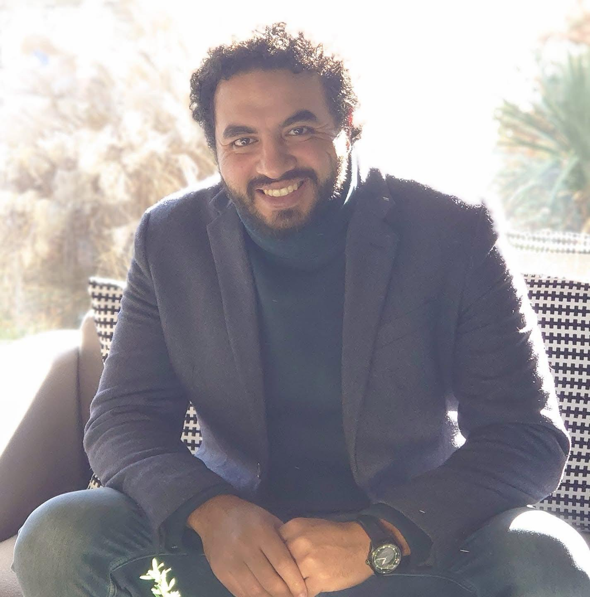

A lean civil engineering practice built around direct accountability.
Zic0n is being developed as a San Diego-based civil engineering practice focused on practical technical support and straightforward client relationships.

Ahmed Abdalla, Ph.D., P.E.
Ahmed is a California-licensed Civil Engineer with experience in transportation, roadway design, construction materials, pavement engineering and private-development permitting.
His background includes public-sector transportation work, consulting design experience and doctoral research in sustainable pavement materials. Zic0n is structured to provide clients direct access to senior technical judgment while remaining flexible enough to support project-specific needs.
Do the work that fits. Bring in specialists when it doesn't.
Zic0n does not present itself as a large multidisciplinary firm. The practice is focused on civil engineering services within the responsible engineer's competence, with independent specialist consultants engaged when geotechnical, structural, surveying or other disciplines are required.